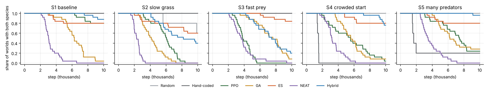
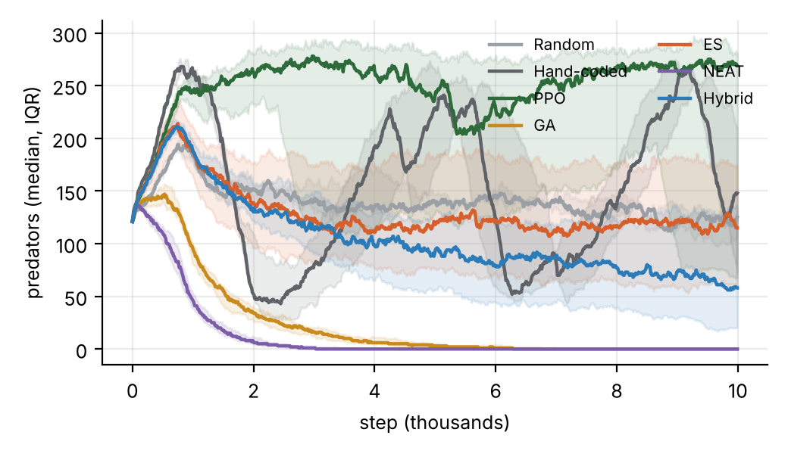
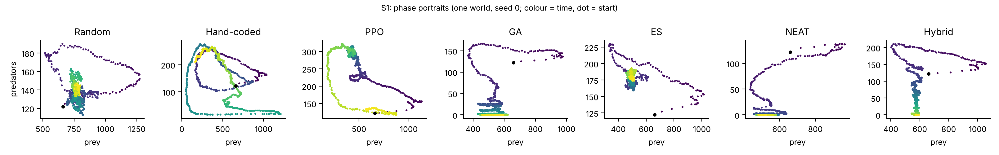
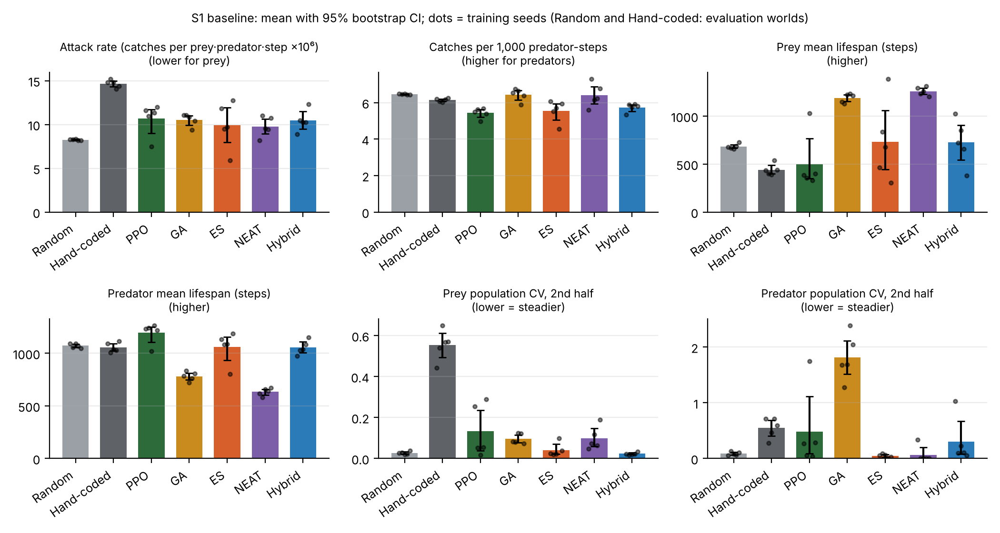

Read chapters 1 to 3 first: they explain the project, the ideas behind it and the world the animals live in. Chapters 4 to 6 explain how we keep the comparison fair, how each learning method is built, and what we have found. Chapter 7 is the hands-on part. Keep the glossary open when a term is new.
EcoArena is a small simulated ecosystem of rabbit-like prey and wolf-like predators. We let different machine-learning methods control the animals and ask which methods build an ecosystem that works, not just which method makes the best single animal.
Most machine-learning benchmarks give each method one agent, one task and a score, then reset and repeat. Real ecosystems are different: many animals act at once, they are born and die, the world never resets, and what is good for one animal can be bad for its species. A predator that eats every prey it sees is a great hunter for a while, then starves.
So EcoArena asks two questions at once:
| Code | Method | Family | One-line idea |
|---|---|---|---|
| M1 | PPO | Reinforcement learning | Improve one shared brain step by step, using every moment's reward and a learned estimate of the future |
| M2 | GA (genetic algorithm) | Neuroevolution | Keep a population of brains, copy the best, add random mutations |
| M3 | ES (evolution strategies) | Neuroevolution | Try many small random changes to one brain and move it toward the ones that scored best |
| M4 | NEAT | Neuroevolution | Evolve the brain's wiring too: start tiny and grow neurons and connections |
| M5 | Hybrid | Both | Evolve for half the budget, then hand the best brain to PPO |
| B0, B1 | Random, Hand-coded | Baselines | Random actions; simple rules we wrote (prey flee to refuges, predators chase) |
We trained every method with 5 random seeds and tested each on 5 fresh worlds for 10,000 steps in 5 different scenarios (Chapter 7). The headline result surprised us:
When animals learn, the ecosystem usually breaks. Random animals kept both species alive in 92% of test worlds; ES managed 77%, the Hybrid 64%, PPO 22%, GA 10% and NEAT 0%. Every single collapse was the predators dying out: prey never went extinct.
And the methods fail in two different ways. GA and NEAT predators slowly starve: they catch the most prey per step but spend more energy chasing than they gain. PPO predators do the opposite: they multiply, over-eat the prey, then crash. This is now the centre of the paper.
Four ideas carry the whole project: predator–prey population dynamics, reinforcement learning, evolution of neural networks, and the difference between optimising an individual and keeping a group alive. This chapter explains each from the beginning.
Picture an island with rabbits and foxes. When rabbits are plentiful, foxes eat well and have many cubs. More foxes eat more rabbits, so rabbits become scarce. Now foxes go hungry and their numbers fall, which lets the rabbits recover. The two populations rise and fall in a repeating loop, with the predator peak arriving a little after the prey peak.
In the 1920s Lotka and Volterra wrote this down as two equations. With x prey and y predators:
Prey grow on their own (a·x) and are eaten in proportion to how often prey and predators meet (b·x·y). Predators die off on their own (c·y) and grow by eating (d·x·y). The meeting term x·y matters a lot for us: how many catches happen per prey, per predator, per step is a direct measure of hunting skill that does not depend on how many animals are alive. We call it the attack rate.
Three more ideas from ecology appear in this project:
Every animal is controlled by a policy: a function from what the animal sees (its observation, 102 numbers) to what it does (its action, 2 numbers: how much to turn and how much to speed up). In EcoArena every learned policy is the same small neural network: 102 inputs, two hidden layers of 64 neurons with tanh activations, and 2 outputs. All animals of one species share one network, but each animal sees its own surroundings, so they behave differently. Training means finding good weights for that network, about 11,000 numbers.
There are two big families of ways to find those weights, and the project compares them.
In RL an agent learns by trial and error from a reward: a number after every step saying how good that step was. The agent wants to maximise the return, the sum of future rewards, where rewards further in the future count a bit less. The discount γ (gamma) sets how much less. We use γ = 0.99, so a reward 100 steps away still counts about 37%, and one 500 steps away less than 1%. In plain words: the agent plans about a hundred steps ahead.
PPO (Proximal Policy Optimization, Schulman et al. 2017) is the most widely used modern RL algorithm. One round of PPO goes like this:
Two details matter for us. First, PPO gets feedback at every step, so it can tell which exact moment helped or hurt: this is called credit assignment. Second, it needs the gradient of the network, so it only works with differentiable networks of a fixed shape.
Neuroevolution skips gradients entirely. It treats the network's weights as a genome, tries many genomes, measures each one's fitness (for us: the same reward, averaged over the time the genome controlled animals), and breeds the next generation from the good ones. It only needs a score, never a gradient, so it can handle rewards that are rare, noisy or delayed in a way gradients struggle with. The price is that it learns from far less information per step: one number per genome per generation.
Our GA follows the "deep GA" of Such et al. (2017). Keep 50 genomes. Each generation, measure all of them, keep the top 10% (5 genomes) unchanged as elites, and fill the other 45 places with copies of random elites plus small Gaussian noise (standard deviation σ = 0.02 on every weight). That is all: no crossover, no gradient. It is surprisingly strong on some problems and weak on others.
OpenAI-ES (Salimans et al. 2017) keeps one brain θ instead of a population. Each generation it samples 25 random directions ε, scores the 50 brains θ + σε and θ − σε (the mirrored pairs are called antithetic sampling and cancel out a lot of noise), turns the scores into ranks, and moves θ toward the directions that did better. Mathematically this estimates a gradient of the average fitness without backpropagation. We apply that estimate with the Adam optimiser.
NEAT (NeuroEvolution of Augmenting Topologies, Stanley and Miikkulainen 2002) also evolves the network's shape. Every genome starts minimal (inputs wired straight to the 2 outputs). Mutations add neurons and connections. Three tricks make this work: every new connection gets a global innovation number, so two different networks can be lined up for crossover; genomes are grouped into species of similar structure that compete mainly among themselves, so a new structure gets time to tune its weights before it has to beat everyone; and a species that stops improving for 20 generations is removed.
Evolution explores broadly but learns slowly per step; PPO learns quickly from detailed feedback but can get stuck near where it started. The hybrid tries to get both: GA (or ES) runs for the first half of the budget, then its best brain becomes the starting point for PPO for the second half. The handover needs care because the critic starts from scratch (Chapter 5).
This last idea became central once we saw the results. All five methods train each animal to do well for itself: gain energy, avoid dying. None of them is told to keep its species, or the other species, alive. Ecology has names for what can go wrong:
Chapter 7 shows that both failure modes appear in EcoArena, and Chapter 10 describes how we are testing them.
EcoArena is a flat square world, 200 × 200 units, whose edges wrap around (walk off the right edge and you come back on the left). Grass grows on it, prey eat the grass, predators eat the prey. Nothing is scripted: populations rise and fall only because of these rules and what the animals choose to do.
The ground is a 100 × 100 grid of grass cells, each holding between 0 and 1 unit of grass. Grass regrows logistically: slowly when a cell is almost bare, fastest when half full, slowly again when nearly full (rate 0.02 per step, plus a tiny floor so bare cells always come back).
Every animal has an energy store between 0 and 100. Energy is the currency of the whole world:
Refuges are 48 round patches (radius 6) scattered over the map. A prey standing in a refuge cannot be caught. But grass inside a refuge never grows above 0.35, so a prey that hides forever slowly starves: it has to come out to eat. The refuge layout depends only on the world's seed.
A predator can catch a prey within 1.5 units. Several rules make hunting realistic instead of trivial:
catch_prob 0.5). A miss stuns the predator for 40 steps.Every step, every world does the following in this exact order. The browser version must follow the same order, and a test checks that it does (Chapter 9).
| # | Phase | What happens |
|---|---|---|
| 1 | Actions | Each animal turns by up to its max turn and changes speed by up to its max acceleration |
| 2 | Move | Positions update; edges wrap around |
| 3 | Graze | Prey eat the grass under them (a cell is shared equally by the prey on it) |
| 4 | Captures | Predators within 1.5 units of an exposed prey lunge; 50% succeed; misses are stunned |
| 5 | Costs | Living and moving cost energy; ages and timers tick |
| 6 | Deaths | Starved, too old or eaten |
| 7 | Births | Animals above their energy threshold and off cooldown give birth into a free slot |
| 8 | Immigration | Optional; switched off in the benchmark |
| 9 | Regrowth | Grass regrows |
The world never resets. There are no episodes: animals are born and die mid-run, and the world keeps going. This is the main thing that makes EcoArena harder than an ordinary RL benchmark.
Each animal sees through a cone in front of it, cut into 16 equal sectors. Prey have wide eyes (240°, range 20); predators have forward-facing eyes (120°, range 12), like real rabbits and wolves.
For each sector the animal gets 6 numbers: the distance to the nearest thing in that sector, and which kind it is (grass, prey, predator, refuge or nothing). That is 16 × 6 = 96 numbers. Six more describe the animal itself: energy, speed, age, whether it is busy (a predator digesting or stunned), the grass under it, and whether it stands in a refuge. Total: 102 numbers.
The action is 2 numbers in [−1, 1]: turn (left or right) and thrust (speed up or brake).
To make training fast, the simulator runs many worlds in parallel on the GPU. Each species has a fixed number of slots per world (2,400 for prey, 600 for predators) stored in tensors of shape [worlds, slots]. A slot is either alive or free. A birth fills a free slot; a death frees one. No animal is a Python object, so one tensor operation updates every animal in every world at once. On the RTX 5060 Ti the large world runs at about 190 world-steps per second with untrained animals; each world holds about 1,000 animals.
All randomness comes from a hash of (seed, step, stream, world, slot) instead of a random-number generator with hidden state. Any random number can be recomputed exactly, in Python or in the browser, which is how the web demo reproduces the Python world (Chapter 9).
The benchmark world (configs/s1_large.json) is 200 × 200 with 600 prey and 120 predators at the start. The small world (s1_balanced.json, 100 × 100, a quarter of everything) has the same rules and is used for tests. On the small world predator numbers dip to 1–3 at the bottom of a cycle and die out by chance, so it is not used for results.
| Scenario | Change from S1 | What it tests |
|---|---|---|
| S1 baseline | none | the main result |
| S2 slow grass | grass regrows at half speed | a poorer world: less food for everyone |
| S3 fast prey | prey top speed × 1.3 | harder hunting |
| S4 crowded start | twice as many of both species at the start | a shock at the beginning |
| S5 many predators | twice as many predators at the start | heavy predation pressure |
Scenarios are written as multipliers ("x2") in configs/scenarios.json, so they apply to either world size. Policies are always trained on S1 and only tested on S2–S5: the scenarios check how well a learned behaviour carries over to conditions it never saw.
Comparing RL and evolution is easy to get wrong: give one method a better reward, a bigger brain or more compute and it wins for the wrong reason. Most of the engineering effort in this project went into making sure the methods differ only in how they learn.
| Held equal | Value | Why it matters |
|---|---|---|
| Reward / fitness | the same formula for every method and both species (below) | one early run used a different reward for PPO and it reversed a conclusion (Chapter 6) |
| Brain | MLP 102 → 64 → 64 → 2, tanh, about 11k weights (NEAT grows its own) | capacity is not a factor |
| Compute budget | 150,000 world-steps per run (4 parallel worlds × 37,500 steps) | every method sees the same amount of simulation |
| World | S1, 200 × 200, the same seeds per training seed | same difficulty |
| Evaluation | fresh worlds the method never trained on, same seeds for all | no method is tested on easier worlds |
Each step, each living animal gets:
Gaining energy is good, spending it is bad, and dying costs a full point. The middle term refunds the energy handed to a newborn, so that having a child is neutral rather than a loss: an animal that eats well and survives will breed anyway, so the reward does not need to pay extra for breeding. For PPO this reward is summed into the return; for GA, ES and NEAT a genome's fitness is the average reward per animal-step of the animals it controlled.
We first gave PPO +1 per birth, the way many papers do. Evolution could not use that bonus fairly (Chapter 6), so evolution ran without it. That difference alone made PPO's predators look worse than evolution's. With the bonus removed for everyone, PPO's prey became the best of all methods. Lesson: in a comparison, the reward must be identical.
We count compute as world-steps: one world advanced by one step. We first tried counting agent-steps (one animal living one step) and it failed: prey outnumber predators about five to one, so prey used up their budget far sooner, stopped learning, and the still-learning predators then over-ate the frozen prey until the world collapsed. Agent-steps also depend on how many animals are alive, which is itself an outcome of the method. World-steps are the same for everyone, and every species learns for the whole run.
After training, each method's prey and predator brains are loaded and run without any learning and without random exploration (each brain outputs its most likely action). The benchmark protocol is:
| Metric | Definition | Better is |
|---|---|---|
| Survived | both species still alive at step 10,000 | higher |
| Extinction time | step at which the first species died out | later |
| Attack rate | catches per (prey × predator × step) × 106, the Lotka–Volterra meeting term | lower for prey |
| Catches per 1k predator-steps | how often a predator eats, per 1,000 steps it lives | higher for predators |
| Lifespan | animal-steps lived divided by deaths | higher |
| Population CV | standard deviation / mean of a population over the second half of the run | lower = steadier |
| Reward per 1k agent-steps | the training objective itself | higher |
Attack rate misleads for predators. A predator that eats a lot spends more time digesting, which lowers catches per prey × predator × step when prey are plentiful. For predators we use catches per predator-step.
Attack rate also flatters random prey. They are rarely caught because they rarely meet predators, but they starve. That is why we always report reward and survival next to it.
The unit of analysis is a training seed. The 5 test worlds of one seed share the same trained brains, so they are not independent; we average them first and get 5 numbers per method. The fixed baselines have no training seeds, so each of their worlds counts as one sample.
Textbook RL and evolution assume episodes: start a game, play it to the end, score it, reset. EcoArena never resets and animals appear and vanish mid-run. Each method needed a few specific ideas to work in that setting.
One network per species is shared by every animal of that species (parameter sharing). A rollout collects 64 steps × 4 worlds × every living animal, which is hundreds of thousands of samples per update. Two masks keep it correct:
valid marks slots that held a living animal when it acted. Only those samples are trained on.done marks an animal that died during the step. Its return stops there. If a newborn later fills the same slot, it starts a new trajectory, because the done flag cuts the advantage calculation.If a species dies out during training, the trainer starts a fresh world and carries on. (Chapter 7 shows why this mattered more than we thought.)
| PPO setting | Value | Note |
|---|---|---|
| Learning rate, epochs, clip | 3×10−4, 4, 0.2 | standard |
| γ, GAE λ | 0.99, 0.95 | looks ~100 steps ahead |
| Rollout | 64 steps × 4 worlds | about 590 updates in 150k world-steps |
| Entropy bonus, min action std | 0.003, e−2 ≈ 0.14 | added after prey stopped exploring (Chapter 6) |
The obvious way to score 50 genomes is 50 separate worlds. That is slow, and worse, each genome would face a different ecosystem, so lucky worlds would decide the ranking. Instead all 50 genomes live in the same worlds at the same time:
A generation lasts 128 steps; 150k world-steps across 4 worlds give 293 generations. A newborn in a slot keeps that slot's genome until the generation ends.
| Method | Main settings |
|---|---|
| GA | population 50, 5 elites, mutation σ 0.02, generation 128 steps, a genome needs 50 animal-steps to count |
| ES | 25 antithetic pairs (50 evaluations), σ 0.02, Adam learning rate 0.01, weight decay 0.005; the champion is θ itself |
| NEAT | population 50, up to 48 hidden neurons, aim for 5 species (the distance threshold adapts), remove a species after 20 generations without progress, top 20% of each species breed |
NEAT networks all have different shapes, which normally means evaluating them one at a time in plain Python. We compile every genome into the same fixed layout instead: [102 inputs | 48 hidden slots | 2 outputs], with dense weight matrices that are zero where a connection does not exist. Signals are propagated as many rounds as the deepest network needs. Then all 50 networks run as one batched GPU operation, just like GA and ES.
GA runs for the first 75k world-steps; its champion's weights are copied into PPO's actor for the last 75k. Two adjustments stop PPO from wrecking the inherited brain in the first updates:
Random picks uniformly random actions. Hand-coded uses the same observation as the learned brains. Its prey graze, steer to visible grass, and on seeing a predator run into a visible refuge (or stand still if already inside), otherwise flee. Its predators chase the nearest visible prey at full speed, wander when they see none, and coast while digesting, since chasing then only burns energy.
The benchmark looks simple now, but almost every rule in it exists because something went wrong first. Knowing these stories will save you from repeating them, and several of them belong in the paper's discussion.
| Date (2026) | Milestone |
|---|---|
| 26 Oct | World engine, baselines and tests. Survival gate failed, rules tuned, gate passed on the 200 × 200 world. PPO trainer written. |
| 27 Oct | PPO fixes (entropy bonus, world-step budget). Genetic algorithm. |
| 28 Oct | GA fitness without the birth bonus; GA signal check; ES. |
| 28–29 Oct | NEAT, then the hybrid. Benchmark runner. |
| 29 Oct | Birth bonus removed for every method. Web demo: TypeScript world, 3D view, landing page, loaders. Docker deploy. |
| 30 Oct | Benchmark training: 25 runs on the GPU. Analysis script. |
| 1 Nov | Benchmark evaluation and analysis. Landing page and demo brains updated. Study 2 code. |
Before any learning, a benchmark world must be able to keep both species alive with simple behaviour; otherwise every method fails and nothing is learned. Our rule was that hand-coded animals must keep both species for 10,000 steps in at least 4 of 5 worlds. The first version failed (2 of 5): hand-coded predators over-hunted early and starved. Three rounds of rule sweeps added the 50% catch chance, the 40-step stun after a miss and the 60-step digestion. The final rules passed in 10 of 10 worlds with hand-coded animals and with random ones.
On 100 × 100 the predator population fell to 1–3 animals at the bottom of each cycle and died out by bad luck, whatever the brains did. Moving to 200 × 200 (four times the area and animals) fixed this, at the cost of slower simulation.
In the first PPO runs the prey's action randomness collapsed to zero: the policy became deterministic early and stopped finding better behaviour. A small entropy bonus (0.003) and a floor on the action noise fixed it.
Covered in section 4.3: freezing each species at its own agent-step budget let predators over-exploit frozen prey (1 of 4 worlds survived). That is already a small version of the arms-race idea from Chapter 2.
A genome controls a slot for only 128 steps, but an animal lives 500–1,500 steps and breeds on energy it mostly gathered under earlier genomes. A birth bonus therefore rewarded genomes for work they did not do, and GA champions with it were worse than random. We removed it from evolution's fitness.
GA prey looked worse than random by attack rate, so we checked whether GA could tell good brains from bad at all. We put known policies (PPO, hand-coded, random, untrained networks) into one shared world and scored them exactly as GA does. GA's champions clearly beat random and untrained networks, and in a single 128-step window the top 10% of genomes were PPO copies 42–70% of the time (chance: 20%). So the signal works, but for prey it is noisy: prey deaths are rare, discrete events, so one window ranks them only weakly. This is our explanation for why evolution learns predators well and prey poorly.
At this point evolution's predators (GA 8.18 catches per 1k steps, ES 8.03) beat PPO's (5.30). But PPO still had the +1 birth bonus that evolution had dropped. Retraining PPO without it changed everything: PPO predators reached 7.45 and PPO prey became the best prey of any method (attack rate 8.2, against 14.2 for hand-coded). The "evolution makes better predators" story had been mostly a reward difference. Since then every method uses exactly the same reward.
All the results so far came from training one species against hand-coded opponents. A real ecosystem has both sides adapting, so the benchmark trains each method on both species at once. That change produced the main finding of the project (Chapter 7).
Trained against hand-coded opponents, one run each: PPO made the best prey (attack rate 8.2) and every learned predator beat the hand-coded hunter by 25–40% in catches per predator-step (GA 8.18, ES 8.03, hybrid 7.64, NEAT 7.59, PPO 7.45, hand-coded 5.92). The hybrid gave no gain over its parts. NEAT was the weakest evolutionary method: it spends much of its budget growing structure (about 17 hidden neurons by the end).
Every method trained both species together: 5 methods × 5 seeds = 25 runs, about 15 minutes each on an RTX 5060 Ti. Each run was then tested in all 5 scenarios on 5 fresh worlds for 10,000 steps. The full tables are in results/bench/STATS.md.
| Method | Balanced after 10k steps (all scenarios) | S1 | S2 | S3 | S4 | S5 |
|---|---|---|---|---|---|---|
| Random | 92% | 100% | 60% | 100% | 100% | 100% |
| ES | 77% | 80% | 60% | 84% | 80% | 80% |
| Hybrid | 64% | 88% | 40% | 20% | 76% | 96% |
| Hand-coded | 64% | 100% | 100% | 100% | 0% | 20% |
| PPO | 22% | 80% | 0% | 0% | 4% | 24% |
| GA | 10% | 4% | 0% | 8% | 8% | 28% |
| NEAT | 0% | 0% | 0% | 0% | 0% | 0% |
In every collapse, in every scenario and every method, the predators died out. Prey never went extinct. Random animals keep the steadiest world because their predators are bad hunters but their prey are equally bad at escaping, so neither side gets ahead.


GA and NEAT predators catch the most prey per step (6.4 per 1,000 steps, the same as random) but live the shortest lives (633–782 steps, against about 1,060 for the others). Their population falls by a factor of e every 0.6–1.3 thousand steps. They spend more energy chasing than their catches return. Meanwhile their prey live 1,190–1,260 steps, more than twice as long as PPO's prey.
PPO predators live longest (1,196 steps) and their population is the largest of any method (about 240 per world). They push the prey down to about 490, the lowest of any learned method. In most S1 worlds this holds, but in the harder scenarios the predators overshoot their food and crash: PPO survives 80% of S1 worlds but almost none in S2–S4.

| Method | Attack rate | Catches / 1k predator-steps | Prey lifespan | Predator lifespan | Predator trend (log / 1k steps) | Training resets |
|---|---|---|---|---|---|---|
| Random | 8.3 | 6.46 | 683 | 1,072 | −0.04 | – |
| Hand-coded | 14.7 | 6.14 | 440 | 1,056 | +0.01 | – |
| PPO | 10.7 | 5.44 | 501 | 1,196 | 0.00 | 9–15 |
| GA | 10.6 | 6.44 | 1,190 | 782 | −0.77 | 1–3 |
| ES | 9.9 | 5.56 | 734 | 1,059 | −0.02 | 0 |
| NEAT | 9.8 | 6.41 | 1,260 | 633 | −1.75 | 7–12 |
| Hybrid | 10.4 | 5.74 | 728 | 1,055 | −0.08 | 0–5 |
Means of 5 training seeds (baselines: 5 worlds). "Training resets" = how often a species died out during each training run and the trainer silently started a fresh world.

The interesting result is not "which method wins". It is that methods which train each animal to do well for itself tend to destroy the ecosystem, and they do it in two recognisable ways that ecology predicts: an arms race won by the prey (GA, NEAT) and over-exploitation by the predators (PPO). Study 2 (Chapter 10) tests these explanations directly.
Everything is in one repository. The Python side trains and evaluates; the web/ folder is the browser demo. You can run the tests and small experiments on any laptop; full training needs an NVIDIA GPU (we use an RTX 5060 Ti with 16 GB).
EcoArena/ ├── configs/ world rules as JSON: s1_large (benchmark), s1_balanced (small), scenarios ├── ecoarena/ │ ├── env/ the world: world.py (rules), config.py, rng.py (reproducible randomness) │ ├── policies/ random and hand-coded baselines │ ├── trainers/ ppo.py, ga.py, es.py, neat.py; common.py = the shared reward │ └── eval/ quick.py, benchmark.py (per-world tests), behaviour.py (tactics) ├── scripts/ command-line entry points (below) ├── tests/ automated tests (pytest) ├── results/ checkpoints, histories, evaluations, summaries, figures │ ├── bench/ the benchmark: train/, eval/, figures/, STATS.md, SUMMARY.md │ └── ppo/ ga/ ... earlier one-species experiments, each with a SUMMARY.md ├── web/ the browser demo (Vite + React + three.js + TypeScript) └── paper/ the paper's LaTeX source goes here (empty for now)
# Python 3.12 with uv (pip works too) uv venv --python 3.12 && source .venv/bin/activate uv pip install torch # RTX 50xx cards need the CUDA 12.8+ build uv pip install -e ".[dev]" pytest -q # all tests, CPU, under a minute ruff check ecoarena scripts tests # style check; CI runs both
python scripts/run_baseline.py --policy heuristic --worlds 5 \
--steps 10000 --base s1_large.json
python scripts/timing.py --device cuda # simulation speed
run_baseline.py writes a population plot, the raw population series and a JSON summary to results/baselines/. Start here: it shows what a healthy world looks like.
Every training script takes --learn prey, --learn predator or --learn prey predator. Untrained species use --opponent (hand-coded by default).
python scripts/train_ppo.py --learn prey predator --name my-ppo # M1 python scripts/train_ga.py --learn prey predator --name my-ga # M2 python scripts/train_es.py --learn prey predator --name my-es # M3 python scripts/train_neat.py --learn prey predator --name my-neat # M4 python scripts/train_hybrid.py --learn prey predator --name my-hybrid # M5 (GA then PPO)
Useful options: --seed, --world-steps (budget, default 150,000), --worlds (parallel worlds, default 4), --device cpu, --base s1_balanced.json (small world for quick tries). Each run writes prey.pt / predator.pt (the brains), history.json, curves.png and eval.json (a quick test against the baselines) to results/<method>/<name>/.
For a first try, use --base s1_balanced.json --world-steps 20000 --device cpu. It finishes in minutes on a laptop and exercises the same code.
python scripts/benchmark.py train # 25 runs, 5 methods x 5 seeds (~6.5 h) python scripts/benchmark.py eval # 5 scenarios x 5 worlds x 10k steps (~2 h) python scripts/benchmark.py table # TABLES.md and per_world.csv python scripts/analyze.py # figures and STATS.md python scripts/dynamics.py # cycles, phase portraits (CPU)
All benchmark commands are resumable: stop with Ctrl+C at any time and run the same command again; finished runs are skipped. Filters such as --methods ppo es, --seeds 0 1 and --scenarios S1 run a subset.
The GPU machine is at Miraz's home, so long jobs follow a simple loop: pull the latest code, run the next command, commit the results/ folder and push, then analyse the pushed results from anywhere.
git pull python scripts/<whatever is next> git add results && git commit -m "..." && git push
results/bench/SUMMARY.md: the benchmark in one page.ecoarena/env/world.py: the top comment lists every rule and the step order.ecoarena/trainers/common.py: the shared reward, under 50 lines.ecoarena/trainers/ga.py: the shared-world evaluation; ES and NEAT build on it.results/ppo/SUMMARY.md: the birth-bonus story with numbers.The demo runs the real EcoArena world in the browser, with the trained brains, in a 3D low-poly diorama. A scroll-through landing page explains the project first, then visitors enter the live simulation and can swap brains, change scenarios and follow single animals.
The browser cannot run PyTorch, so web/src/sim/world.ts is a line-by-line TypeScript port of world.py. The two must never drift apart, so a parity test records Python runs (random and hand-coded animals, 150 steps) and replays them in TypeScript. Every birth, death, capture, age and timer must match exactly; positions and energy must match to float32 rounding; the 102-number observations to 10−4; and exported brains must produce the same actions as PyTorch. This works because the randomness is a pure hash (section 3.5), not a hidden generator state. Over thousands of steps the two runs slowly drift apart because sin and cos round differently in the two languages; that is expected, and the test proves the rules are the same.
cd web pnpm install pnpm dev # http://localhost:5173 pnpm test # the Python-to-TypeScript parity test pnpm build # dist/ (static site) and dist/ecoarena.html (everything in one file) python scripts/export_web.py brains # after changing web/brains.manifest.json python scripts/export_web.py parity # after changing the world rules docker build -f web/Dockerfile -t ecoarena-web . # Nginx image; deployed on Dokploy
Which checkpoint each method uses is set in web/brains.manifest.json; for each method we picked the benchmark seed whose worlds stayed balanced most often.
The benchmark is finished and analysed. Because its main result is the collapse itself, we are extending the project into a second study that asks why it happens and what prevents it, aiming at both the course paper (January 2027) and an external conference.
| Experiment | Question | What we change |
|---|---|---|
| E1 Horizon | Do learners collapse because they only look ~128 steps ahead? | longer generations; PPO discount 0.995 and 0.999 |
| E2 Level of selection | Is it what animals optimise, or the level at which selection acts? | one genome per world (group selection), with and without a reward for ecosystem health |
| E3 Learning speed | Is it an arms race the prey win? | prey learn 4× slower, or not at all; reverse control for predators |
| Cross-play | Are learned prey simply too good? | prey of one method against predators of another |
| Tactics | What do the animals actually do? | measure refuge use, ambushes at refuge edges, pursuit, fleeing, herding |
The code is written and tested. The GPU is working through it night by night with the same commands (python scripts/study.py ...); the full plan is in the team's Study 2 doc.
world.py and the summaries, and point out anything unclear or suspicious. Fresh eyes catch bugs.